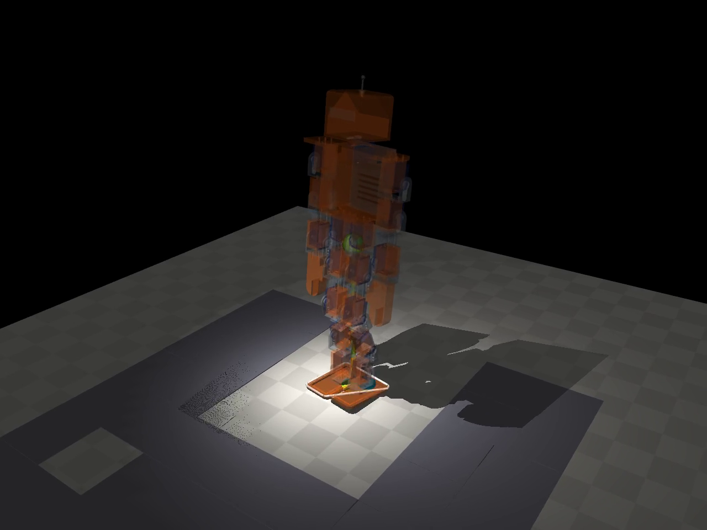
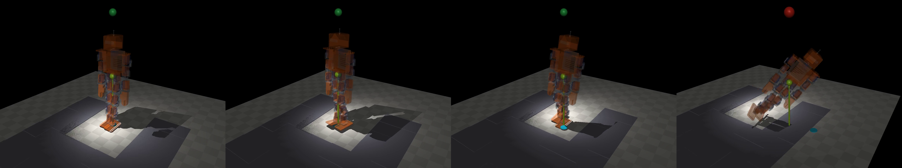

Yoan Maisonneuve
Navitek Robolabs, Montréal, Québec
Preprint, 12 November 2026. All results are from simulation (MuJoCo). Code, data and laboratory notebooks are openly available.
We study what a simulated 1.5 m, 26.5 kg humanoid (N3, 17 position-controlled joints) can learn about its own body while walking. Every experiment was pre-registered: hypotheses, thresholds and our credence were written and committed before running, and verdicts were written after. We report five findings. (1) A gait tuned by black-box search (CMA-ES) does not rediscover the linear inverted pendulum: its foot-placement gain has the same magnitude as the pendulum prediction (24.7 vs 24.8 deg per m/s) but the opposite sign; substituting the pendulum gain makes the robot walk backwards. With steps lasting 0.75 s, a 0.76 m pendulum would diverge about fifteen-fold per step, so the gait keeps its centre of mass over its feet and regulates speed through stride length. (2) The centre of mass stays above the soles 91% of the time; with rigid feet, the contact polygon is usually a single edge. (3) A fall can be felt about one second before it happens: a learned alarm on seven proprioceptive signals announced 88% of unseen falls at least 0.3 s ahead (median 0.97 s) with 10% false alarms, but a single torso-tilt threshold (9.8°) did almost as well. (4) A learned reflex rediscovered the human ankle strategy with arm counterbalance; it prevented 6 of 8 push-induced falls but none of 50 falls caused by persistent adverse conditions. (5) Two seconds of walking suffice to recognise which of six conditions (nominal, slope, sensor delay, command delay, soft floor, wind) the robot is in, with 92.5% accuracy; the most informative signal is how much the body wobbles.
Nous étudions ce qu'un humanoïde simulé de 1,5 m peut apprendre de son propre corps en marchant, avec des hypothèses écrites et commises avant chaque essai. La marche trouvée par essais n'est pas un pendule (le gain de placement du pied a la grandeur du pendule et le signe opposé) ; le centre de masse reste au-dessus des semelles 91 % du temps ; la chute se sent environ une seconde à l'avance ; un réflexe appris redécouvre la stratégie de cheville et rattrape les poussées, pas les terrains ; deux secondes de marche suffisent à reconnaître le terrain à 92,5 %, par le tremblement du corps.
Navitek Robolabs develops open humanoid robots meant to be printed and built by anyone. Before building N3, a 1.5 m design, we use simulation to ask what such a body can learn about itself: where its centre of mass is, how it should place its feet, when it is about to fall, and in what kind of world it is walking. Classical humanoid control answers some of these questions with models, notably the linear inverted pendulum and the capture point [1, 2, 3]. Learning-based locomotion answers them with data and randomisation [4, 5, 6]. We ask a narrower, empirical question: when a small controller is tuned only by trial and error, what does it end up knowing, and what can be read from its own sensations?
The work was run as a laboratory notebook. Each experiment (R-112 to R-117) states its hypotheses, numeric thresholds and our prior credence before any run; these were committed to a timestamped git history, an excerpt of which is in the open package (Section 7). Results that refuted us are reported as such, and so are our own mistakes (Section 5).
Robot and simulator. N3 is simulated in MuJoCo 3.8 [7] with a 0.5 ms time step and the implicit-fast integrator. It weighs 26.5 kg, is 1.5 m tall, and has 17 position-controlled joints (stiffness 800, damping 25, torque limit 200 N·m): hip roll and pitch, knee, ankle pitch and roll on each leg, shoulder pitch and roll and elbow on each arm, and the neck. Hip flexion reaches 135°. There is no hip yaw, no waist and no hands. Only the feet collide with the floor; feet are rigid meshes; floor friction is 0.6.
Gait. The walking controller has 19 parameters: a 15-parameter rhythmic pattern (period, amplitudes and phases of hip, knee and ankle, lateral sway, and proportional-derivative feedback of torso attitude to the ankles), a foot-placement law that adds kv (v − v*) degrees to the swing hip pitch and ky vy to the swing hip roll (v: filtered centre-of-mass velocity; v*: target speed), and a cadence law that speeds up or slows down the phase with the velocity error. The parameters were tuned with CMA-ES [8] at nominal conditions until the gait passed our judge in 100% of nominal trials, advancing 0.89 m in 10 s at a target of 0.10 to 0.14 m/s.
Judge. An episode lasts 10 s. It succeeds if the torso never tilts more than 40°, the centre of mass never drops below 60% of its standing height, the robot advances at least 0.6 m, drifts sideways at most 0.5 m, and spends at most 0.1 s with no foot on the ground.
Conditions. Disturbances come from a catalogue of 26 physical axes (masses, segment lengths, actuator gains and delays, floor friction, slope, uneven and soft ground, pushes, wind, sensor noise, bias, delay and drop-outs, initial state), each with a narrow, a wide and an extreme range justified by printed-robot tolerances. Push sets draw two 0.1 s pushes of up to 60 N on the torso, at random times and directions.
For the linear inverted pendulum with height z0, ω = √(g/z0), and a step of duration Ts, a first-order deadbeat correction places the foot ∂u/∂v = coth(ωTs)/ω further ahead per unit of excess speed [1, 2, 3]. We measured z0 = 0.762 m (ω = 3.59 s−1) and a hip-to-ground lever L = 0.650 m in single support, and verified the sign of hip pitch both kinematically and dynamically (+10° moves the foot 0.09 m backwards, −10° moves it 0.13 m forwards). The pendulum then predicts kv ≈ −24.8° per m/s.
| gait | learned kv (° per m/s) | pendulum kv | |ratio| | period T | ωTs |
|---|---|---|---|---|---|
| earlier tuning (R-107) | +31.7 | −24.7 | 1.29 | 1.75 s | 3.14 |
| pre-trained gait | +24.7 | −24.8 | 1.00 | 1.53 s | 2.75 |
| re-tuned, nominal only | +10.1 | −24.8 | 0.41 | 1.49 s | 2.68 |
All three learned gains are positive while the pendulum gain is negative (Table 1). Two of three match the pendulum's magnitude within 30%, which we had predicted with low credence (0.30) but which, given the opposite sign, does not mean the pendulum was found. Replacing the learned gains by the pendulum's in the pre-trained gait made it fail every nominal trial (0/10) and every push trial (0/50): it walked backwards (−0.85 m in 10 s). Removing foot placement altogether cost only 8 points under pushes (45/50 → 41/50 successes). The explanation is the time scale: with ωTs ≈ 2.7, the pendulum would diverge by e2.7 ≈ 15 during one step, so a stiff, slow gait cannot rely on the next step to catch itself. It keeps its mass above the stance foot, and in such a gait a longer step means a faster walk: the positive sign regulates speed through stride length, while the pendulum's sign creates positive feedback.

In 110 episodes (10 nominal, 50 with pushes, 50 under narrow random conditions; 28 falls), we tracked the centre of mass and the capture point relative to the support polygon every 0.04 s. Using the convex hull of contact points, as planned, the feet touched the floor by only two points (one edge) in 67% of nominal readings and by one point in 12%; the centre of mass was then "inside" only 15% of the time. With a second measure registered after this first reading and before running it (the hull of sole vertices within 1 cm of the floor, as a compliant sole would give), the centre of mass was above the soles 91% of the time and the capture point 58.5%. Any fixed-margin alarm (3 cm for 0.12 s) fired in every episode, including those without a fall: weight transfer moves the capture point outside the soles at each step. For a physical N3, the edge contacts argue for a compliant sole.
We collected 330 episodes (100 narrow, 100 wide random conditions, 100 push sets, 30 nominal), learned on even-ranked episodes (165, 81 falls) and judged on odd-ranked ones never seen (165, 82 falls). Each alarm fires when its signal exceeds a threshold for 0.12 s; thresholds were set on the learning half for at most 10% false alarms.
| alarm | threshold | falls announced ≥ 0.3 s ahead | false alarms | median lead |
|---|---|---|---|---|
| torso tilt only | 9.8° | 72/82 (88%) | 12% | 0.94 s |
| capture point only | 13.6 cm outside the soles | 70/82 (85%) | 12% | 0.62 s |
| learned (logistic, 7 signals) | p > 0.62 | 72/82 (88%) | 10% | 0.97 s |

The learned alarm weights the capture-point distance (+3.65, standardised), lateral tilt (+3.28) and centre-of-mass distance (−3.09): together, "the capture point is outside while the mass is still inside", i.e. a velocity carrying the body off its feet, mostly sideways. It announced no more falls than a single tilt threshold; it only raised slightly fewer false alarms. Falls of this quasi-static gait are slow topples.
When the tilt alarm fires, a reflex adds joint offsets proportional to torso roll and pitch (hip roll, ankle roll, hip pitch, a crouch, shoulder roll). Its five gains were learned with CMA-ES on 60 learning episodes (40 falls → 36). The result is the human ankle strategy with arm counterbalance: ankle roll +1.88° per degree of torso roll, shoulders −1.85, hips −1.06, almost no crouch (3.7°). On the 165 unseen episodes it prevented 8 of 82 falls (10%) and caused 2 of 83 (2%); but by condition it prevented 6 of 8 push-induced falls, 2 of 24 under narrow random conditions and 0 of 50 under wide ones. A reflex rescues accidents, not persistent adverse terrain; slow sideways falls would need a catch step.
For six conditions (nominal; and, one at a time in their wide range, slope 0–8°, sensor delay 0–20 ms, command delay 0–40 ms, soft floor, lateral wind up to 10 N), we ran 40 two-second walks each and summarised them with 14 proprioceptive numbers (mean and standard deviation of torso pitch, roll and their rates, of forward and lateral velocity, the fraction of double support and the number of support changes). A random forest (200 trees) trained on half the walks recognised the condition of the other half with 92.5% accuracy (chance: 17%): nominal 100%, sensor delay, command delay and soft floor 95%, slope and wind 85% (they are confused with each other: both push the body sideways steadily). The most informative features were the standard deviations of roll rate and pitch rate: how much the body wobbles. Contrary to our prediction, delays were easy to recognise: they make the feedback loop oscillate.
| id | prediction (abridged) | credence | verdict |
|---|---|---|---|
| H142 | learned placement gain has the pendulum's sign (3 gaits) | 0.70 | refuted |
| H143 | |learned gain| within 30% of the pendulum's, 2 of 3 | 0.30 | confirmed (magnitude only) |
| H144 | pendulum gains keep ≥9/10 nominal and 80% of push success | 0.45 | refuted (0/10, 0/50) |
| H145 | without placement, push success drops ≥20 points | 0.55 | refuted (8 points) |
| H146–H147 | CoM / capture point inside the contact polygon ≥80% / ≥70% | 0.60 / 0.55 | refuted (15%, 1.4%) |
| H148, H150 | contact-polygon alarm announces falls; capture point earlier than CoM | 0.50 / 0.75 | to revisit (alarm always on) |
| H149 | contact-polygon alarm ≤30% false alarms | 0.40 | refuted (100%) |
| H151 | CoM above the soles ≥80% of the time | 0.60 | confirmed (91%) |
| H152 | capture point above the soles ≥70% | 0.50 | refuted (58.5%) |
| H153, H155 | sole-polygon alarm announces falls; capture point earlier | 0.50 / 0.75 | to revisit (alarm always on) |
| H154 | sole-polygon alarm ≤30% false alarms | 0.40 | refuted (100%) |
| H156 | learned alarm: ≥70% of falls ≥0.3 s ahead, ≤20% false alarms | 0.45 | confirmed (88%, 10%) |
| H157 | learned alarm announces more falls than tilt alone | 0.60 | refuted (72 vs 72) |
| H158 | … more than capture point alone | 0.65 | confirmed (72 vs 70) |
| H159 | median lead ≥0.5 s | 0.40 | confirmed (0.97 s) |
| H160 | reflex prevents ≥30% of unseen falls | 0.40 | refuted (10%) |
| H161 | reflex causes ≤5% falls | 0.55 | confirmed (2%) |
| H162 | reflex acts through legs more than arms | 0.55 | confirmed |
| H163 | reflex crouches ≥10° | 0.45 | refuted (3.7°) |
| H168 | condition recognised in ≥70% of unseen walks | 0.45 | confirmed (92.5%) |
| H169 | slope is the best recognised | 0.45 | refuted |
| H170 | sensor delay is the worst recognised | 0.35 | refuted |
In R-112, our own analysis code first took the pendulum gain with the wrong sign; the surprising result prompted a kinematic and a dynamic check before any verdict, the run was archived, and the check is now built into the script, which aborts if the two disagree. In R-113, the planned support polygon (contact points) turned out to be degenerate with rigid feet; we kept its verdicts as measured and registered a second measure before running it. These are documented in the notebooks with the archived runs.
Everything is simulated, with exact state; a physical robot will estimate its centre of mass and velocity with noisy sensors. One robot, one walking controller with 19 parameters, small evaluation sets (tens to hundreds of episodes), and conditions applied one at a time in R-117. The fall alarm and reflex were evaluated on the same gait they were learned for.
The open package contains the notebooks R-112 to R-117 (in French; hypotheses written before, verdicts after), the N3 model and meshes, all scripts, the raw results, the archived run of our sign error, and the dated commit history: ymiaconseil.com/navitek/recherche/articles/. The research log with every hypothesis and verdict is at ymiaconseil.com/navitek/recherche/. Code under the MIT licence; texts, figures and data under CC BY 4.0.
Use of AI. The experiments, analysis code and this text were produced with the assistance of Claude (Anthropic), an AI system, working under the author's direction; the author takes responsibility for the content. AI systems are not listed as authors.